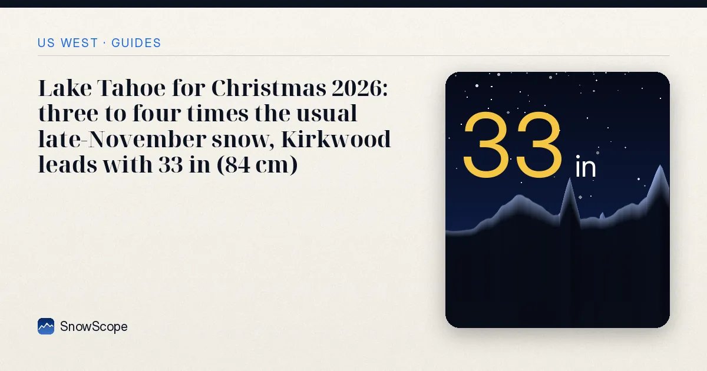
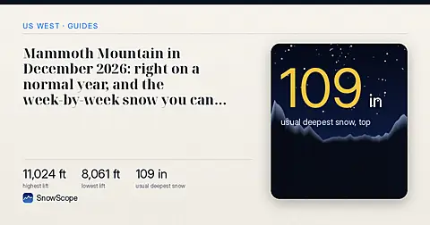

Lake Tahoe for Christmas 2026: three to four times the usual late-November snow, Kirkwood leads with 33 in (84 cm)
Tahoe is in rare shape for the end of November: at mid-mountain Palisades has 22 in (57 cm) where 7 in (17 cm) is normal, Heavenly 17 in (44 cm) against 6 in (16 cm), and Northstar 18 in (45 cm) against 4 in (11 cm). That head start makes a skiable Christmas very likely across the lake; another 8 in (21 cm) is forecast at Sugar Bowl by Monday.
See the live snow forecast for Lake Tahoe in the SnowScope appSnow depth, powder alerts and the 3D map, free.
Why this start is unusual
Tahoe's season usually starts late. On a normal year the 30 cm (12 in) base that marks a proper season arrives at Palisades around November 27 and at Northstar only in early December. This year the storms of mid-November did the job three weeks early: Kirkwood has 33 in (84 cm) on its upper slopes and Palisades 35 in (89 cm).
| Resort | Upper slopes today | Mid: now / normal | Usual on Dec 25 | 50 cm by New Year |
|---|---|---|---|---|
| Kirkwood | 33" | 26" / 11" | 43" | 80% |
| Sugar Bowl | 28" | 21" / 8" | 33" | 78% |
| Palisades Tahoe | 35" | 22" / 7" | 27" | 72% |
| Heavenly | 30" | 17" / 6" | 25" | 65% |
| Northstar | 22" | 18" / 4" | 24" | 63% |
Christmas odds, resort by resort
Kirkwood, the highest base on the list, is the safest bet: a usual Christmas Day depth of 43 in (109 cm) at 8,638 ft (2,633 m), and a 50 cm (20 in) base by New Year in 80% of 46 winters. Sugar Bowl, on the crest above Donner Pass, follows with 33 in (84 cm) on a usual December 25.
Palisades and Heavenly sit lower in the record, at 27 in (68 cm) and 25 in (64 cm) on a usual Christmas; in a quarter of winters they had less than 13 in (33 cm) and 12 in (30 cm). That spread is why a strong November matters so much around the lake: it removes the worst outcomes.
The forecast to Monday
A Pacific system arrives on Monday, November 30: about 8 in (21 cm) for Sugar Bowl, 7 in (17 cm) for Palisades, 6 in (16 cm) for Kirkwood and 4 in (9 cm) for Heavenly. The weekend itself is dry and cold enough to keep the snow in good condition.
Track the daily numbers on the Kirkwood snow page, the Palisades Tahoe snow page and the Heavenly snow page.
How much can a December dry spell undo?
Tahoe is known for long dry spells between storms, sometimes for weeks. The good news this year is that the base is far above the usual track: at Kirkwood's mid-mountain (8,638 ft (2,633 m)) the pack is 26 in (66 cm), against a usual 11 in (27 cm) for the date and a usual 33 in (85 cm) for mid-December. Even with no snow for two weeks, the mountain would still sit near a normal mid-December.
Lower down, warm spells hurt more. Heavenly's California base and Northstar's lower runs lose snow faster in sunny weather than Kirkwood's high bowls or Sugar Bowl's crest. The deepest Christmas snow is reliably found above about 7,641 ft (2,329 m) around the lake.
One more reason for optimism: the snow-sure Christmases in our record mostly came in winters that started like this one, with a base already in place before December.
Snow on the ground on Christmas Day is close to a given at the higher resorts: 100% of winters at Kirkwood's mid-mountain, 97% at Heavenly's. The difference between a good and a poor Tahoe Christmas is not whether there is snow, but how much of the mountain is open, and this year's start tips that balance the right way.
Choosing a side of the lake
North Lake (Palisades, Sugar Bowl, Northstar) gets the storms first and is closer to Reno airport and I-80. South Lake (Heavenly, Kirkwood) has the town nightlife and Kirkwood's high, steep terrain. In a year that started this well, both sides should be fully skiing by the holidays if December brings even an average share of storms.
Tips for skiers
- Lock in Christmas lodging now; a deep early start brings the Bay Area crowds earlier than usual.
- Carry chains: Caltrans chain controls on I-80 and US-50 are common during holiday storms.
- Ski weekdays if you can; Tahoe weekends in December are the busiest of the early season.
- Compare more Christmas destinations on our Christmas skiing page and the US West snow hub.
About these numbers
Snow numbers: SnowScope's snow map and forecast for today, and our record of 46 past winters at each resort (an estimate for the area, not the resort's own report).
Cite this report
For research, teaching or the press: the numbers and charts are free to reuse under CC BY 4.0 with this citation.
SnowScope (2026), Lake Tahoe for Christmas 2026: three to four times the usual late-November snow, Kirkwood leads with 33 in (84 cm), https://snowscope.app/blog/en/2026/11/lake-tahoe-christmas-2026-snow-ahead-of-normal-kirkwood-palisades-heavenly.html, accessed 2026-11-27
SnowScope (Atlas Labs). (2026, November 27). Lake Tahoe for Christmas 2026: three to four times the usual late-November snow, Kirkwood leads with 33 in (84 cm). SnowScope snow reports. https://snowscope.app/blog/en/2026/11/lake-tahoe-christmas-2026-snow-ahead-of-normal-kirkwood-palisades-heavenly.html
BibTeX
@misc{snowscope2026laketahoechristmas2026sn,
author = {{SnowScope (Atlas Labs)}},
title = {Lake Tahoe for Christmas 2026: three to four times the usual late-November snow, Kirkwood leads with 33 in (84 cm)},
year = {2026},
month = nov,
howpublished = {\url{https://snowscope.app/blog/en/2026/11/lake-tahoe-christmas-2026-snow-ahead-of-normal-kirkwood-palisades-heavenly.html}},
note = {Published 2026-11-27 22:24 UTC; accessed 2026-11-27}
}· CC BY 4.0 · Methods, data and tools →
Follow Lake Tahoe
Free: a message when fresh snow is coming, and the forecast every morning.
More snow reports

Tamarack in Idaho's West Mountains: today's snow, the weekend day by day, the Monday storm, and how this start compares with a normal year.

Red Lodge Mountain in Montana's Beartooths: snow today, the weekend storm, how far behind a normal year it is, and what December usually brings.

Mammoth has 19 in (48 cm) on its upper slopes and sits close to a normal late-November base. What each December week usually brings, from 46 winters.